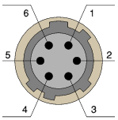
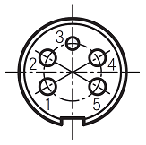
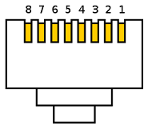
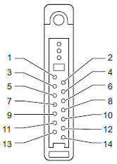
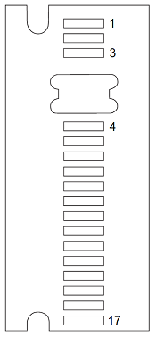
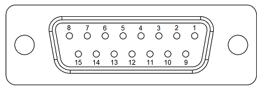
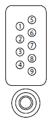
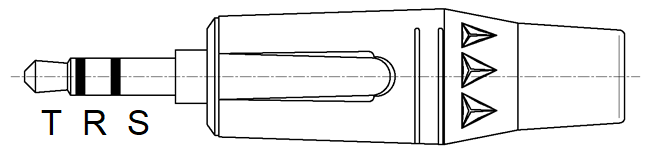
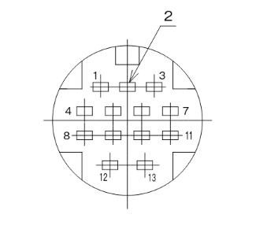

6 Pin Hirose Connector

View:
- Female receptacle/jack viewed from mating face
- Male plug solder cups viewed from assembly face
Pinout map / wire color map:
- 1 - RED (N/C)
- 2 - GRN (DATA)
- 3 - YEL (SENSE)
- 4 - BLK (GND)
- 5 - WHT (N/C)
- 6 - BLU (N/C)
6 Pin Male Plug Hirose P/N: HR10A-7P-6P(73)
6 Pin Female Jack Hirose P/N: HR10A-7J-6S(73)
Cable Retention Crimp Tool Hirose P/N: HR10A-TC-02
5 Pin Amp Connector

View:
- Female receptacle/jack viewed from mating face
- Male plug solder cups viewed from assembly face
5 Pin Male Plug (silver plated) Amp P/N: T3360001U
5 Pin Male Plug (gold plated) Amp P/N: T3360018U
8 Pin 8P8C Connector

View:
- Male plug contacts from mating face
Kenwood Portable Accessory Connector

View:
- Female jack contacts from mating face (radio side)
Motorola XTS4000 Accessory Connector

View:
- Female jack contacts from mating face (radio side)
15 Pin DSUB Connector (2 row)

View:
- Male plug solder cups viewed from assembly face
Harris 9 Pin Portable Accessory Connector

View:
- Female jack contacts from mating face (radio side)
3.5mm TRS Connector

View:
- Male plug contacts
Hirose RP13A-12PA-13SC

View:
- Male plug contacts
Hirose Jack to Motorola R2670 (KFDtool AC103A)
- 6 pin female jack Hirose to 5 pin male plug Amp
- Equivalent to Motorola TKN8210 cable
Pinout:
- Amp Pin 1 - Hirose Pin 5
- Amp Pin 2 - Hirose Pin 1
- Amp Pin 3 - Hirose Pin 2
- Amp Pin 4 - Hirose Pin 4
- Amp Pin 5 - Hirose Pin 4
Hirose Jack to Kenwood KPG-115 Compatible (KFDtool AC104B)
- 6 pin female jack Hirose to 8 pin male plug 8P8C
- Equivalent to Kenwood KPG-115 cable
Pinout:
- 8P8C Pin 1 - Hirose Pin 4
- 8P8C Pin 2 - Hirose Pin 2
- 8P8C Pin 5 - (Cathode) Schottky Diode (Anode) - Hirose Pin 2
- 8P8C Pin 6 - Hirose Pin 4
Hirose Jack to Kenwood KPG-93 Compatible (KFDtool AC106A)
- 6 pin female jack Hirose to male Kenwood portable accessory connector
- Equivalent to Kenwood KPG-93 cable
Pinout:
- Accessory Pin 1 - Hirose Pin 4
- Accessory Pin 8 - Hirose Pin 4
- Accessory Pin 10 - Hirose Pin 4
- Accessory Pin 12 - (Cathode) Schottky Diode (Anode) - Hirose Pin 2
- Accessory Pin 13 - Hirose Pin 2
Hirose Jack to XTS4000 (KFDtool AC107A)
- 6 pin female jack Hirose to male Motorola XTS4000 accessory connector
- Equivalent to Motorola CKN6886/0182297T15 cable
Pinout:
- Accessory Pin 1 - Hirose Pin 4
- Accessory Pin 8 - Hirose Pin 4
- Accessory Pin 9 - Hirose Pin 2
- Accessory Pin 13 - Remove
Hirose Jack to Aeroflex/IFR 2975 (KFDtool AC108A)
- 6 pin female jack Hirose to male 15 pin DSUB plug (2 row)
- Equivalent to Aeroflex/IFR cable 51190/6041-4201-200
- Backshell must have a low profile due to faceplate protrusion
Pinout:
- DB15 pin 5 - Hirose Pin 2
- DB15 pin 7 - Hirose Pin 4
- DB15 pin 8 - 2k Resistor - Hirose Pin 2
- DB15 pin 13 - Hirose Pin 2
Hirose Jack to Harris Unity/XL (KFDtool AC109A)
- 6 pin female jack Hirose to male Harris 9 pin portable accessory connector
- Equivalent to Harris 12082-0400-A1 cable
Pinout:
- Accessory Pin 3 - 20k Resistor - Hirose Pin 4
- Accessory Pin 5 - Hirose Pin 4
- Accessory Pin 6 - Hirose Pin 2
- Accessory Pin 9 - Hirose Pin 4
Hirose Jack to 3.5mm Plug (KFDtool AC110A)
- 6 pin female jack Hirose to male 3.5mm TRS plug
Pinout:
- TRS Tip - Hirose Pin 2
- TRS Ring - Hirose Pin 3
- TRS Sleeve - Hirose Pin 4
Hirose Jack to EF Johnson 5300ES (non-Lightning)
- 6 pin female jack Hirose to female 13-position Hirose RP13A-12PA-13SC
Pinout:
- RP13A Pin 1 - Hirose Pin 2
- RP13A Pin 3 - Hirose Pin 4
- RP13A Pin 5 - Hirose Pin 4